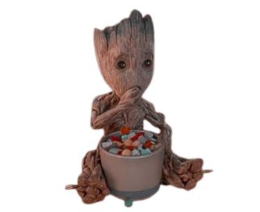

No Universo Cinematográfico Marvel, Groot ganhou enorme popularidade.
Aqui, Groot aparece como parceiro inseparável de Rocket. Ele demonstra força e lealdade, e no final do filme realiza um sacrifício emocionante, protegendo toda a equipe com seu próprio corpo.
Após o sacrifício, um pequeno pedaço dele cresce novamente, dando origem ao Baby Groot. Nessa fase, ele é curioso, divertido e às vezes até meio desobediente.
Em Guardiões da Galáxia Vol. 2 e depois em outros filmes, Groot cresce e entra na fase adolescente, com comportamento mais rebelde (bem típico dessa idade).
Ao longo de filmes como Vingadores: Guerra Infinita e Vingadores: Ultimato, Groot continua evoluindo, mostrando que cada versão dele é praticamente uma “nova personalidade”, embora mantenha sua essência.
